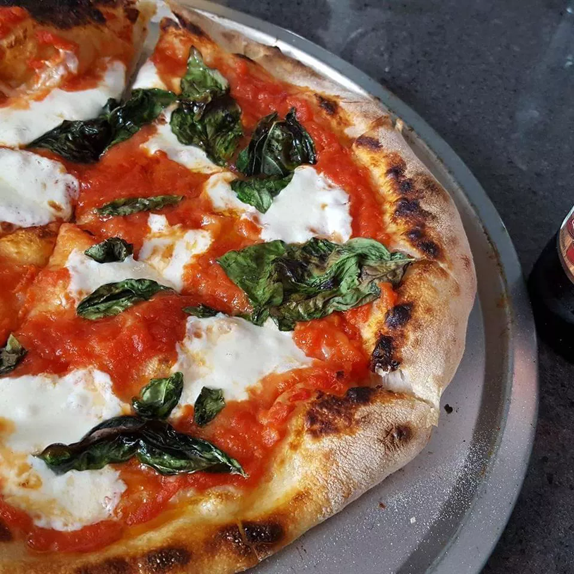

Pizza

There are few things in life as great as a hot slice of pizza. Crispy crust, warm melty cheese, and your favorite
toppings — it doesn't get much better than that. While you probably have your favorite pizza restaurant on speed
dial, skip the takeout pie and try one of these recipes instead — you won't be disappointed. Whether you're team
deep-dish, brick-oven, Detroit-style, or like to mix it up with different pizza flavors, we have a recipe that
you and your family are sure to love. Scroll through to find our best pizza recipes of all time that just might
take down your takeout.
Ingredients
- 1(12 inch) pre-baked pizza crust
- 1 cup spicy barbeque sauce
- 2 skinless boneless chicken breast halves, cooked and cubed
- Sugar
- 1 cup sliced pepperoncini peppers
- 1 cup chopped red onion
- ½ cup chopped fresh cilantro
- 2 cups shredded Colby-Jack cheese
How to Make Pizza Step-By-Step
- Preheat the oven to 350 degrees F (175 degrees C).
- Place pizza crust on a baking sheet. Spread barbeque sauce on crust. Top with chicken, pepperoncini
peppers, onion, and cilantro. Cover with Colby-Jack cheese.
- Bake in the preheated oven until cheese is melted and bubbly, about 15 minutes.